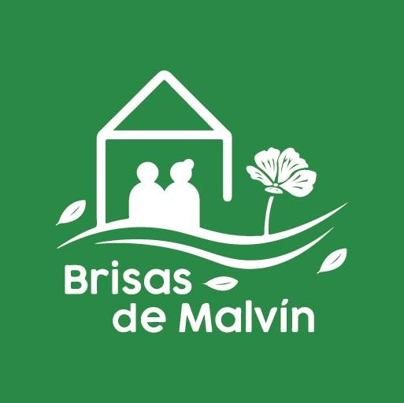

PERSONAS QUE CUIDAN A PERSONAS
Tu vocación puede
ser parte de Brisas.
Si compartís nuestro compromiso con el respeto, la escucha y el bienestar de las personas mayores, queremos conocerte.

Brisas de MalvínRESIDENCIAL PARA PERSONAS MAYORESPERSONAS QUE CUIDAN A PERSONAS
Si compartís nuestro compromiso con el respeto, la escucha y el bienestar de las personas mayores, queremos conocerte.